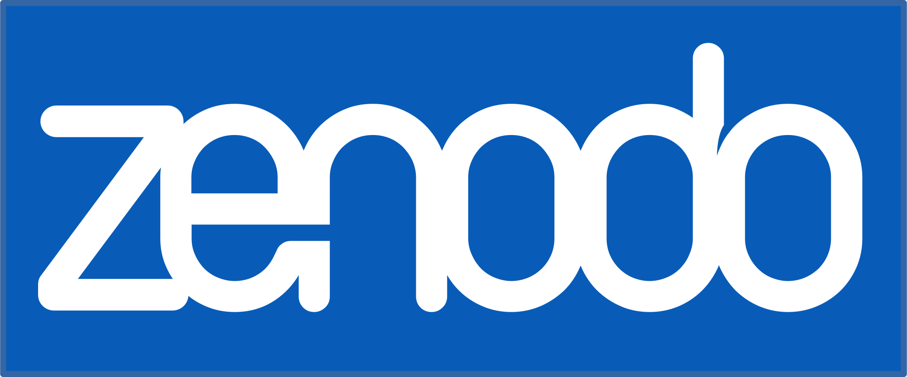
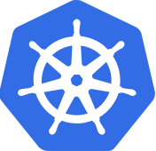

IT Infrastructure
Introduction
The ForestNavigator IT infrastructure provides a shared platform for deployment of models, data repositories, and web apps. By using a shared platform, the exchange of data and creation of interfaces is supported and enables:
Dissemination of data and results to the general public.
Collaboration on deliverables that cut across project partners.
Access to shared databases and datasets for models and web apps.
Automation of links between models.
The hosting and publishing of model and tool code.
…
Widely-used modern components were chosen to comprise the IT infrastructure so that ForestNavigator can benefit from well-developed IT practices and knowledge. This page gives an overview.
GitHub
GitHub is the leading code hosting and development collaboration cloud platform. The platform is owned and managed by Microsoft and provides many services free-of-charge. Most developers and many researchers are already familiar with GitHub. Via GitHub Actions, GitHub can integrate with the rest of the ForestNavigator IT infrastructure. GitHub is therefore a good default place for ForestNavigator code hosting and collaboration.
The GitHub platform does have limitations. Repositories cannot store large files without paying for the Git LFS service. Privacy of stored data is not guaranteed in a verifiable manner. And not all services are available in the for-free tier or for private repositories. In particular, there is only limited availability of the GitHub Actions service for private repositories.
To get started with GitHub see here.
GitLab
For use cases where the limitations of GitHub are problematic, a self-hosted GitLab instance is available. It provides code hosting and development collaboration features that are very similar in scope to GitHub, but by virtue of self-hosting the limitations of data sizes and GitHub Actions (the GitLab equivalent is called GitLab CI/CD) are circumvented. Git LFS is supported without payment. 1
To get started with GitLab, browse to the ForestNavigator GitLab instance and register an account with your institutional email address by clicking on the Register now link at the bottom of the page. Should your email address not be recognized as belonging to a domain of a ForestNavigator partner institution, the registration will fail and you will see an error message requesting you to send an e-mail to still request access.
For security, two-factor authentication (2FA) is required. See the GitLab documentation on 2FA for details. The time-based one-time passwords (TOPT) 2FA option can be accommodated via a TOTP app on a smartphone or tablet. If you do not have one installed, TOTP apps are readily available via app stores. If you prefer a free TOTP app that is open-source and without spyware, FreeOTP or its FreeOTP+ fork (which is more user friendly) are good options.
For now 0Auth authentication has not been enabled for the ForestNavigator GitLab instance. Until that is the case, 2FA requires the use of personal access tokens when using the LFS feature, and the https protocol should be used in that case.
Todo
The GitLab account approval process is manual and may take a while. Once your account has been activated, request access to the ForestNavigator GitLab group by…
Todo
Add details on becoming part of the project’s GitLab group via a per-project support email.
Visit the GitLab online tutorials to learn more about the platform.
Zenodo
Zenodo allows you to release research artifacts such as code or data in a findable, retrievable, and citable way. Each upload to Zenodo is given a Digital Object Identifier (DOI) that you can use as a citation or link as a URL. Zenodo is built and operated by CERN which provides assurance that the infrastructure will remain available and scale with future demand.
See the section on Zenodo Release Management for details.
Docker Hub
Docker Hub is a service provided by Docker for finding and sharing container images with your team. It is the world’s largest repository of container images with an array of content sources including container community developers and open source projects distributing their code in containers.
Users get access to free public repositories for storing and sharing images or can choose a subscription.
Harbor
Harbor is an open source container registry that secures artifacts with policies and role-based access control, ensures that container images are scanned and free from vulnerabilities, and signs images as trusted.
ForestNavigator container images are stored in a dedicated Harbor instance before they can be deployed on the ForestNavigator Kubernetes cluster.
Kubernetes
The hardware of the ForestNavigator IT infrastructure (multiple large servers) is abstracted by Kubernetes. Kubernetes orchestrates the containers in which the various ForestNavigator components (models, data stores, apps) run. For more information, see the containers page. This arrangement enables the integration of these components.
The servers comprise a “Kubernetes cluster” that is the ForestNavigator deployment space. Models can be linked by defining interfaces that use shared cluster resources. This is explained on the interfaces page.
RabbitMQ
RabbitMQ is a light-weight message broker that provides for the queueing and distribution of messages sent from “producers” to “consumers”. Using a message broker as an intermediary when interfacing containers is convenient and allows for decoupling, scalability, and robustness.
Tip
For your local development and testing, you can pull the official Rabbit MQ container image from Docker Hub.
Todo
Add RabbitMQ instance details and getting going documentation.
- 1
Beyond the already-sunk storage infrastructure costs at IIASA.